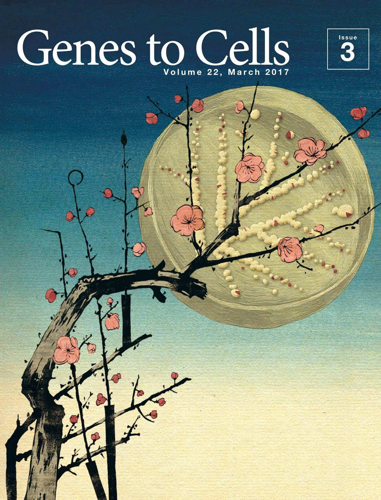

Hi, I’m Erin ✿
I am a PhD student in Behavioural Neuroscience at the University of Toronto studying how epigenetic and chromatin-based mechanisms regulate gene expression in the brain and contribute to Alzheimer’s disease. My research focuses on histone variant regulation, lysosomal biology, and memory-related mechanisms, with the broader goal of understanding how molecular changes in neurons contribute to disease. Beyond research, I am interested in women’s health, science communication, writing, teaching, and mentorship.
Currently
I am investigating the role of macroH2A1 histone variants in chromatin regulation and lysosomal gene programs in Alzheimer’s disease models.
Explore
CV
Education, research experience, awards, and technical skills.
Research
Selected research projects spanning neuroscience, epigenetics, and computational biology.
Teaching & Mentorship
My teaching experience, mentorship, and approach to supporting students.
Outreach
Science communication, public engagement, and community outreach.
Elsewhere
Outside of my academic work, I enjoy building small online spaces where I can write about science, books, and other things that interest me.
